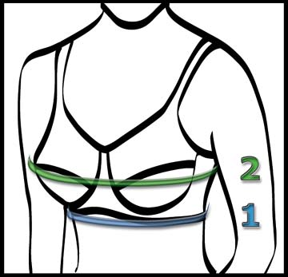

Note:
Based on e-mails that I receive, the following instructions do not apply to everyone. These steps are basically the typical measurement method listed everywhere I have seen for measuring for a bra. As noted below, proper sizing can vary for different body sizes, heights, and weights. If you know of alternate instructions which might work better, please let me know.
An estimated 70% of women do not know their proper bra measurements.
Without knowing these measurements, it can be very difficult to buy
fashionable and well fitting clothes. Many women's clothing items use bra or
cup size measurements to distinguish differences in fit, so these measurements
can be extremely important. This section will arm you with the knowledge you
need for these crucial measurements.
Based on e-mails that I receive, the following instructions do not apply to everyone. These steps are basically the typical measurement method listed everywhere I have seen for measuring for a bra. As noted below, proper sizing can vary for different body sizes, heights, and weights. If you know of alternate instructions which might work better, please let me know.
Additionally, a woman's breasts change significantly over time, particularly during and after pregnancy. Weight loss, gain and monthly cycle variations can also have an effect on the fit of your bra. It is advised that you check your bra size once or twice a year or as necessary due to significant weight changes.
Before you begin:
- Try to get someone to take the measurements for you - your posture will be more relaxed and natural. The measurements should be more accurate.
- Stand up straight and breathe normally
- Don't measure over the top of clothing
- Wear the bra you feel most comfortable in
- Use a cloth tape measure if possible. Note: Older flexible tape measures can sometimes stretch and distort over time.
Traditional measurement method:
 |
Determining your Bra/Band size
(ribcage circumference measurement) | ||
| 1. | Measure around the chest directly under the breast at a constant height with the cloth measuring tape. Add 5 inches to that measurement. This dimension is your bra/band size (If the bra size works out to an ODD number go up one inch to the next EVEN number.) This should equal the circumference around the chest, directly above the breasts/under the arms. | 2. | Now measure around the chest at the height of the fullest part of the breast. The measuring tape should be held horizontal, flat on your back, and your arms should be down. Make a note of that measurement (only used for comparison) and compare it to the Bra Size from step 1. |
|---|---|---|---|
Determining your Cup size (projection of breasts from chest wall) | |||
| 3. | To determine the proper Cup Size, find the difference between step 2 and step 1 (step 2 - step 1.) Use the chart below to determine your Cup Size. | ||
Chart to Determine
Bra Cup Size |
Example: |
||||
|---|---|---|---|---|---|
| Difference | Cup Size |
Step 1: Underbust measurement is 37". Add 5
inches. Bra Size is 42.
Step 2: Full bust measurement is 45". Step 3: 45 - 42 = 3" difference. Cup size is C. Result: Buy a 42C bra. |
|||
| Half inch One inch Two inches Three inches Four inches Five inches Six inches Seven inches |
AA cup A cup B cup C cup D cup DD or E cup F cup G cup | ||||
1 inch ~= 2.5 centimeters | |||||
The usual bra measuring system may not
work:
Some people have written to me suggesting that the previous measurement
scheme does not work at ALL for them. Why? The previous measurement guide
is an approximation. Each person is unique, and all busts differ in volume,
shape and spacing, just as each person's unique body size, height, and
weight can affect a bra's fit; a tape measure and simple formula may not
always tell the whole story. Plus, even if the measurements ARE
accurate, there are no real "standards" for bra sizing, so differences
between manufacturers is common.
An alternate bra measuring scheme:
(from Tanya Brown at Tanya Brown's
Breast Prosthesis Emporium)
Determining your Bra/Band Size:
(ribcage circumference measurement)
- Measure around the chest directly under the breast.
- Measure around the chest, directly above the breasts/under the arms.
- If the difference between the two measurements is two inches or less, use the Step 1 measurement. If the difference is over two inches, you may want to try one bra/band size larger for comfort. This will be your bra/band size.
- If the under-breast measurement is an odd number, add one to reach the next even numbered bra band size.
- Now measure around the chest at the height of the fullest part of the breast. The measuring tape should be held horizontal, and your arms should be down. Make a note of that measurement (only used for comparison.)
Determining your Cup Size:
(projection of breasts from chest wall)
- To determine the proper Cup Size, find the difference between step 5 and your bra band size. Use the chart above to determine your Cup Size.
Notes:
- The previous measurement instructions are most applicable if you are taking bra measurement with an existing set of breasts.
- If you have only one breast due possibly to surgery, or have an uneven breast cup sizes, you should probably equalize the cups (with some form of padding) to the existing or largest breast when measuring to maintain measurement symmetry.
- If you do not have breasts due to whatever the reason, you will take the bra band measurements listed above, but you can pretty much be whatever cup size you wish, depending on what your plans are. Remember that choosing a cup size proportional to your body frame will look the most "natural."
- Suggestions on choosing a cup size (from Tanya Brown at
Tanya Brown's Breast
Prosthesis Emporium):
Bra band sizes 32-28:
- "Slender" build: A cup
- "Average" build: B cup
- "Heavier" build: C cup
- "Average" build: B cup
- "Heavier" build: C-D cup
- "Average" build: C cup
- "Heavier" build: D-DD cup
- If you are in between sizes or you are having difficulty finding a good fit, when you go up a cup size, you should go down a band size. If you go down a cup size, you should go up a band size (ex: if you have a 36C and it is not fitting quite properly, you would probably want to try a 38B or a 34D next.)
- When sizes are DD and above, great care must be taken to be properly fitted. Some bra manufacturers make their Bra Size slightly large. (e.g. a bra marked 38 will probably fit a 40 woman.)
- For sizes above D, cup sizing is not well defined. It can keep increasing by an inch for each successive letter, or it can repeat letters for new cup sizes above D. So, a DD cup is the same as an E cup. A DDD=EE=F cup, a DDDD=EEE=FF=G cup and so on.
- Long line and 3/4 bras should only be considered if their length is LESS than the distance from the under-bust to the natural waist line.
- If either of the bra sizes given here is very different than what you are currently wearing, go with your current size.
- When ordering a mail order garment where a proper fit is important, make sure that the return policy of the company is well understood.
- If you are taking these measurements without wearing a breast form on for only a single prosthesis, determining the bra cup size can be more difficult. Some experimentation may be necessary.
- If you are taking these measurements for two prostheses, you can simply take the bra size measurement (Step 1) and then choose the cup size that is right for you.
- These are guidelines only. Proper sizing may vary for different body sizes, heights, and weights.
- When sizes are DD and above, great care must be taken to be properly fitted. Some bra manufacturers make their Bra Size slightly large. (e.g. a bra marked 38 will probably fit a 40 woman.)
- Long line and 3/4 bras should only be considered if their length is LESS than the distance from the underbust to the natural waist line.
- When ordering a mail order garment where a proper fit is important, make sure that the return policy of the company is well understood.
- Someone sent me mail asking about how to properly measure for a bra when
the breasts have sagged significantly due to gravity. The truth is, I'm not sure because
you probably then need to be wearing a bra to get a proper measurement. Catch-22.
I would suggest that seeing a bra fitter in this case would probably be best.